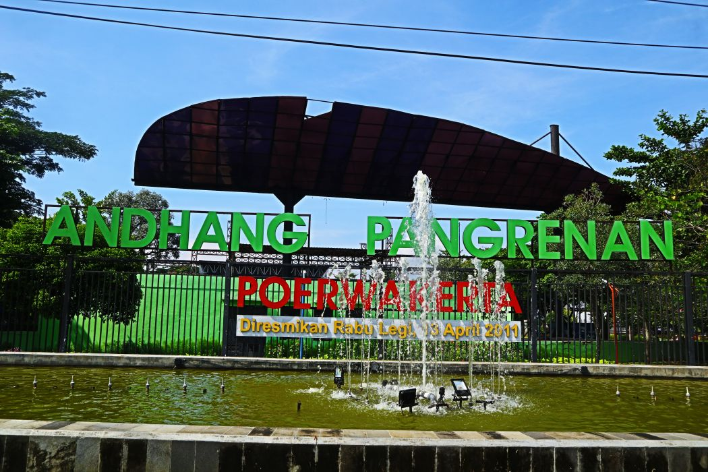
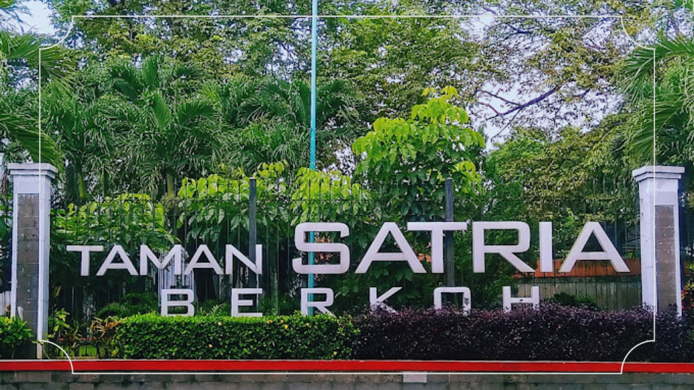
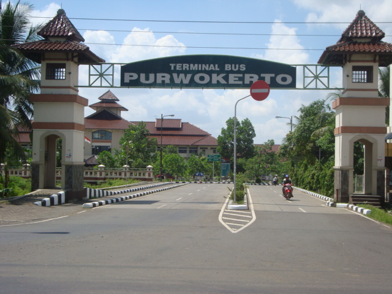

Objek Kami

Taman Andhang Pangrenan Purwokerto
Taman rekreasi ini dibangun pada tahun 2017 dengan konsep taman edukasi yang menggabungkan unsur budaya, sejarah, dan lingkungan...

Taman Satria Purwokerto
Taman Satria Berkoh Purwokerto merupakan salah satu RTH atau Taman Kota yang sudah 33 tahun menjadi paru-paru kota Purwokerto...

Bukit Cinta
Bukit Cinta merupakan area perbukitan yang sejak lama dikenal oleh warga setempat sebagai tempat berkumpul dan berkegiatan sosial...

Terminal Bulupitu
Terminal Bulupitu di Purwokerto secara resmi berdiri pada 6 April 2006, ketika terminal bus dipindahkan dari lokasi lama ke Bulupitu...